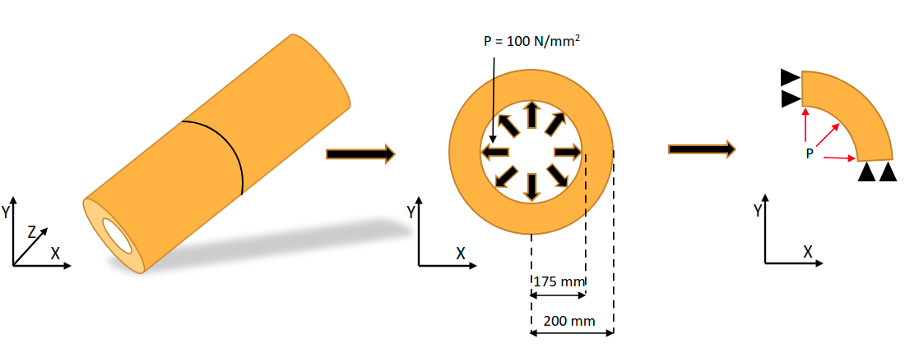

Note
Go to the end to download the full example code
2D Pressure Vessel#
This example demonstrates how to create a basic pressure vessel and apply a pressure to it.
Objective#
In this example we will perform stress analysis of pipe due to internal pressure. Due to the symmetry in geometry and loading, the strain along its axis is negligible and therefore we model this system as 2D plane strain.
Procedure#
Launch MAPDL instance
Setup the model as Python function using PyMAPDL
Automate mesh convergence study
Plot results of interest
Additional Packages Used#
Matplotlib is used for plotting purposes.
NumPy is used for using NumPy arrays.
Problem Figure#
{kind=link}
import matplotlib.pyplot as plt
Launch MAPDL#
import numpy as np
from ansys.mapdl.core import launch_mapdl
# start mapdl
mapdl = launch_mapdl()
Setup the pipe cross section using Python function
We use a function here so we can rebuild the pipe using parameters rather than calling a script several times.
def pipe_plane_strain(e, nu, inn_radius, out_radius, press, aesize):
"""Create 2D cross section modeling a pipe."""
# reset mapdl
mapdl.clear()
mapdl.prep7()
# Define element attributes
# Quad 4 node 182 with keyoption 3 = 2 (plain strain formulation)
mapdl.et(1, "PLANE182", kop3=2)
# Create geometry
# create a quadrant of the pressure vessel
# We perform plane strain analysis on one quadrant (0deg - 90deg) of the
# pressure vessel
mapdl.pcirc(inn_radius, out_radius, theta1=0, theta2=90)
mapdl.cm("PIPE_PROFILE", "AREA")
# Define material properties
mapdl.mp("EX", 1, e) # Youngs modulus
mapdl.mp("PRXY", 1, nu) # Poissons ratio
# Define mesh controls
mapdl.aesize("ALL", aesize)
mapdl.mshape(0, "2D") # mesh the area with 2D Quad elements
mapdl.mshkey(1) # free mesh
mapdl.cmsel("S", "PIPE_PROFILE") # Select the area component to be meshed
mapdl.amesh("ALL")
# Create components for defining loads and constraints
mapdl.nsel("S", "LOC", "X", 0) # Select nodes on top left edge
mapdl.cm("X_FIXED", "NODES") # Create nodal component
mapdl.nsel("S", "LOC", "Y", 0) # Select nodes on bottom right edge
mapdl.cm("Y_FIXED", "NODES") # Create nodal component
mapdl.allsel()
mapdl.lsel("S", "RADIUS", vmin=rad1) # Select the line along inner radius
mapdl.cm("PRESSURE_EDGE", "LINE") # Create a line component
mapdl.allsel()
# Define solution controls
mapdl.slashsolu() # Enter solution
mapdl.antype("STATIC", "NEW") # Specify a new static analysis (Optional)
mapdl.d("X_FIXED", "UX", 0) # Fix the selected nodes in X direction
mapdl.d("Y_FIXED", "UY", 0) # Fix the selected nodes in Y direction
# Change the active Cartesian Coordinate system to Cylindrical Coordinate system
mapdl.csys(1)
# Apply uniform pressure load to the selected edge
mapdl.sfl("PRESSURE_EDGE", "PRES", press)
# Solve the model
mapdl.allsel()
mapdl.solve()
mapdl.finish()
# Enter post-processor
mapdl.post1()
mapdl.set(1, 1) # Select the first load step
max_eqv_stress = np.max(mapdl.post_processing.nodal_eqv_stress())
all_dof = mapdl.mesh.nnum_all
num_dof = all_dof.size
return num_dof, max_eqv_stress
Perform the mesh convergence study#
# Define model input parameters
rad1 = 175 # Internal radius
rad2 = 200 # External radius
pressure = 100
e = 2e5 # Young's modulus
nu = 0.3 # Poisson's ratio
# Define mesh convergence parameters
num_dof = []
max_stress = []
# element size: use log space since mesh converges logarithmically
esizes = np.logspace(1.4, 0, 20)
# run the mesh convergence and output the results on the fly
for esize in esizes:
dof, eqv_stress = pipe_plane_strain(e, nu, rad1, rad2, pressure, esize)
num_dof.append(dof)
max_stress.append(eqv_stress)
print(f"DOF: {dof:5d} Stress: {eqv_stress:.2f} MPa")
DOF: 28 Stress: 702.42 MPa
DOF: 48 Stress: 725.72 MPa
DOF: 57 Stress: 725.63 MPa
DOF: 66 Stress: 725.57 MPa
DOF: 78 Stress: 725.52 MPa
DOF: 124 Stress: 733.64 MPa
DOF: 144 Stress: 733.62 MPa
DOF: 215 Stress: 737.75 MPa
DOF: 250 Stress: 737.74 MPa
DOF: 354 Stress: 740.25 MPa
DOF: 490 Stress: 741.93 MPa
DOF: 656 Stress: 743.13 MPa
DOF: 873 Stress: 744.04 MPa
DOF: 1265 Stress: 745.32 MPa
DOF: 1632 Stress: 745.78 MPa
DOF: 2254 Stress: 746.50 MPa
DOF: 3230 Stress: 747.24 MPa
DOF: 4275 Stress: 747.60 MPa
DOF: 6141 Stress: 748.12 MPa
DOF: 8216 Stress: 748.40 MPa
Plot mesh convergence results#
Draw a dotted line showing the convergence value
plt.plot(num_dof, max_stress, "b-o")
plt.plot([num_dof[0], num_dof[-1]], [max_stress[-1], max_stress[-1]], "r:")
plt.title("Mesh Convergence Study")
plt.xlabel("Number of DOF")
plt.ylabel("Maximum eqv. Stress (MPa)")
plt.show()

Resume results from last analysis from mesh convergence study
# Plot the final mesh used
mapdl.allsel("ALL")
mapdl.eplot(
title="Element Plot",
line_width=1,
show_bounds=True,
cpos="xy",
)
Plot nodal displacement#
Enter post-processing (/POST1) and select the first load step
mapdl.post1()
mapdl.set(1, 1)
mapdl.post_processing.plot_nodal_displacement(
"NORM",
cpos="xy",
cmap="magma",
)
Plot nodal equivalent stress#
mapdl.post_processing.plot_nodal_eqv_stress(cpos="xy", cmap="magma")
Stop mapdl#
mapdl.exit()
Total running time of the script: ( 0 minutes 7.773 seconds)